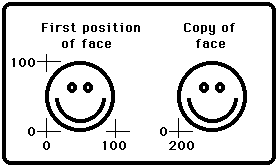

takepic
Syntax
takepic (x1, y1, x2, y2 : int, var buffer : array 1 .. * of int)
Description
The takepic procedure is used to record the pixel values in a
rectangle, with left bottom and right corners of (x1,
y1) and (x2, y2), in the buffer array. This
requires a sufficiently-large buffer (see sizepic ).
The drawpic procedure is used to make copies of the recorded
rectangle on the screen.
Example
After drawing a happy face, this program copies the face to a new
location.

Details
The integer values that takepic places in the buffer can be
read or written (using the read and write statements).
Unfortunately, if a value happens to be the pattern used to represent
the uninitialized value (the largest negative number the hardware can
represent) assignment (by:=) and put of the individual integer
values in the buffer will fail.
The screen should be in a "graphics" mode. See the
setscreen procedure for details. If the screen is not in a
"graphics" mode, it will automatically be set to
"graphics" mode.
Details
The drawpic, takepic, and sizepic subprograms
have been made obsolete by the subprograms
Pic.Draw and
Pic.New of the
Pic module. Users are
strongly suggested to use those routines instead. The
Pic module also contains
subprograms to load images from files.
See also
sizepic and
drawpic. See also
setscreen,
maxx,
maxy,
drawdot,
drawline,
drawbox, and
drawoval.
See also predefined unit Pic.